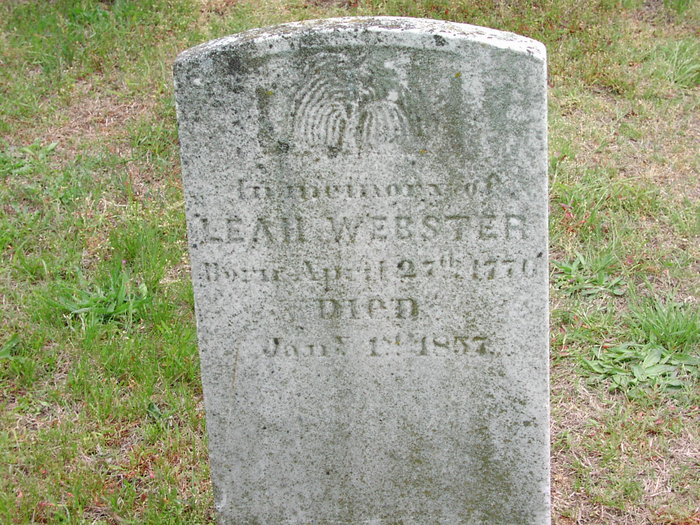

Leah White
1776–1857
Life Events
Born: 1776
Died: January 1, 1857 — Deal Island, Somerset County, Maryland
Family
Spouse:
Children
Military Service
No military service information has been added.
Biography
Leah White Webster was born on April 27, possibly in 1776. Her gravestone appears to record this birth date, although the final digit of the year is difficult to distinguish and may indicate 1770. The 1850 United States Census records her age as 65, suggesting a later birth year. Her exact birth year therefore remains uncertain.
On September 6, 1808, Leah White married John Webster. Their marriage is documented in a historical marriage-register listing associated with Coventry Parish, Rehobeth, Somerset County, Maryland. Family research identifies her husband as John Gabriel Webster III (1784–1844), although the marriage record itself identifies him only as John Webster.
In the 1850 United States Census, Leah Webster was recorded in Dames Quarter District, Somerset County, Maryland, in the same household as Snead Webster, age 23, and Adaline Webster, age 20. Family research identifies Snead Webster as her son Gabriel Snead Webster (1822–1871), but the census does not specify household relationships.
Leah died on January 1, 1857, according to her gravestone. She was buried at Saint Johns Cemetery on Deal Island in Somerset County, Maryland.
Photos
No additional photographs have been added.
Grave & Burial

Sources
-
1808 Marriage of John Webster and Leah White
Type: marriageCoventry Parish marriage register, page 80, recording the marriage of John Webster and Leah White on September 6, 1808. The register identifies the groom as John Webster and does not establish the middle name Gabriel or suffix III.
Location: Coventry Parish, Somerset County, Maryland
Supports: Marriage of John Webster and Leah White, Marriage date of September 6, 1808, Marriage recorded in Coventry Parish, Somerset County, Maryland
-
1850 U.S. Census – Leah and Snead Webster Household
Type: census1850 United States Federal Census, Dames Quarter District, Somerset County, Maryland, page 450, dwelling 539, family 539, enumerated October 8, 1850. The household includes Leah Webster (65), Snead Webster (23), Adaline Webster (20), Elizabeth Gibson (17), Mary M. Webster (2), Margaret Webster (25), and Susan Webster (2). Snead was recorded as a farmer with real estate valued at $300. All household members were recorded as born in Maryland. The census does not identify relationships between household members. Leah's recorded age suggests a birth around 1784–1785, differing from the provisional 1776 birth year on her profile.
Location: Dames Quarter District, Somerset County, Maryland
Supports: Leah Webster, age 65, lived in Dames Quarter District, Somerset County, Maryland, in 1850., Snead Webster, age 23, lived in the same household., Adaline Webster, age 20, lived in the same household., Snead Webster was recorded as a farmer with real estate valued at $300., The census does not establish the relationships among household members.